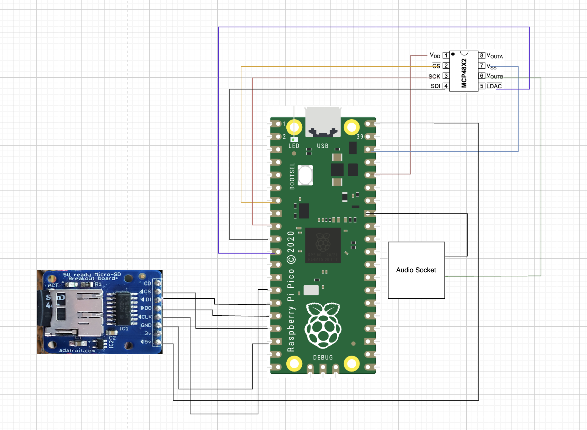
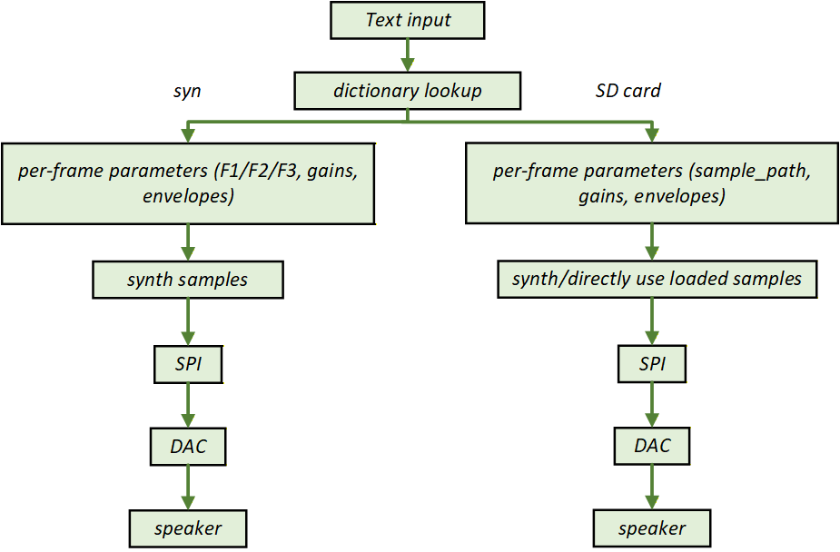

Team: Yayun Zhao (yz3545), Qingyin Zhong (qz425), Hongming Yang (hy665)
Project Summary: This project demonstrates a real-time text-to-speech (TTS) system running entirely on the RP2040 microcontroller. The system converts input text into intelligible speech audio with low latency, leveraging dual-core parallelism and efficient embedded audio processing. The design is tailored for resource-constrained environments, making it ideal for embedded, IoT, and audio applications.
End-to-end TTS: text input → speech output
Dual-core (RP2040) real-time audio synthesis
Multiple voice profiles, adjustable pitch, speed, and timbre
SD card dictionary and phoneme storage
Hardware-accelerated DAC output via SPI (MCP4822)
What you'll learn: How to architect and optimize a real-time TTS pipeline on embedded hardware, and the trade-offs between algorithmic complexity, memory, and audio quality.
System Overview
Input: ASCII text (via serial or SD card)
Processing: Text parsing → phoneme mapping → audio synthesis
Output: Real-time audio via DAC (SPI to MCP4822), speaker
The system supports two main implementation pathways, each with distinct trade-offs in latency, memory, and audio quality. [System Block Diagram Placeholder]
What you'll learn: The overall data flow and hardware-software co-design for embedded TTS.
Implementation Pathways Comparison
Pathway
Method
Pros
Cons
A: Real-Time Synthesis
Core Usage: Dual-Core
Vowels: Synthesized via Formant synthesis (F1/F2/F3 adjustments).
Consonants: Approximated with random white noise (e.g., S, T, K, F, Sh).
Voiced Consonants: Simplified synthesis using a source-filter model.
Consonants/Voiced: Read pre-generated PCM from SD card.
Splicing: Vowel loudness is reduced for smooth transitions.
Very low latency (small read volume).
Better audio quality than Pathway A.
Retains timbre adjustment capability.
Vowels can still sound slightly robotic.
Requires SD card file management.
C: Sample-Based TTS
Core Usage: Single-Core + Interrupt
All phonemes are pre-generated as 16-bit mono PCM files on SD card.
"Sentence Preloading": Analyzes text to pre-load only necessary phonemes, ensuring no playback delay.
Best audio quality, sounds natural.
Smooth splicing.
Large storage requirement.
Cannot pre-buffer all phonemes.
Requires complex preloading logic.
Key takeaway: Pathway A is ideal for extreme resource constraints. Pathway B offers a good balance of quality and performance. Pathway C provides the best audio quality at the cost of storage and complexity.
Program Design
The software is modular, with clear separation between text parsing, phoneme conversion, prosody generation, and audio synthesis. Each module is optimized for real-time performance and minimal memory usage.
Text Parser: Tokenizes input, handles punctuation and case.
Phoneme Mapper: Looks up or generates phoneme sequences for each word.
Prosody Engine: Assigns pitch, duration, and stress to each phoneme.
Audio Synthesizer: Generates or streams PCM data for output.
What you'll learn: How to structure a TTS pipeline for embedded systems, and the importance of modularity for debugging and extension.
Architecture & Data Flow
The system leverages the RP2040's dual-core architecture for parallel processing:
Core 0: Handles text parsing, phoneme mapping, and SD card I/O.
Core 1: Manages real-time audio synthesis and DAC output.
Data is exchanged via a ring buffer to ensure smooth, uninterrupted audio playback. The DAC (MCP4822) is driven via SPI at a recommended sampling rate of 16–22 kHz, with a buffer size of 256–512 samples for optimal latency and stability.
[Architecture Diagram Placeholder]
What you'll learn: How to exploit hardware parallelism and buffer management for real-time audio on microcontrollers.
Implementation Details
Pathway A: Dual-Core Architecture
In offline_tts.c, the main() function calls multicore_launch_core1(core1_entry);, which starts the second core (core1) and runs the core1_entry function.
The project links the pico_multicore library (see CMakeLists.txt), the official RP2040 SDK for multicore programming.
The header pt_cornell_rp2040_v1_4.h defines FIFO macros (e.g., PT_FIFO_WRITE, PT_FIFO_READ) for inter-core communication, and provides two scheduler structs: pt_sched (core0) and pt_sched1 (core1), enabling separate task scheduling for each core.
Division of Labor:
Core 0 (Primary):
Handles all system initialization (hardware, SD card, SPI, GPIO, LED, etc.).
Runs the main loop, which is mainly a heartbeat LED blink (no user input or synthesis).
Manages audio output: a timer interrupt (audio_timer_cb) continuously reads from the audio buffer and sends data to the DAC via SPI, also controlling the audio status LED.
Responsible for all hardware management.
Core 1 (Secondary):
Runs core1_entry, which loops to monitor serial input (e.g., '1', '2', '3') for switching voice styles (male, female, child).
Updates current_voice and prints status when a new style is selected.
After switching, calls synthesize_demo_word() to generate a demo audio segment (calls a series of synthesize_formant_phoneme_fixed).
Handles all speech synthesis and audio data generation, writing samples to the buffer.
Inter-core Collaboration:
Global variables and the spinlock audio_lock protect the audio buffer for safe dual-core access.
Core 0 focuses on audio output and hardware, ensuring smooth playback.
Core 1 focuses on user interaction and speech data generation, offloading computation from the primary core and improving responsiveness.
Pathways B & C: Single-Core + Interrupt Model
Both pathways use a single core with a cooperative protothread (protothread_console) for user command handling and synthesis.
When the user sends a command like say <word> via UART, the synthesis is performed synchronously in the protothread.
Function Call Chain:
synthesize_speech(const char *text) is called in the protothread, parsing the input, looking up the dictionary, and converting text to a phoneme sequence.
For each phoneme of type PHONEME_FORMANT (vowel), synthesize_formant_vowel_espeak(phoneme_t *ph) is called:
Generates a sawtooth source signal.
Applies low-pass filtering.
Passes through three fixed-point IIR resonators (F1/F2/F3).
Applies envelope and DC blocking.
Writes each sample to the audio ring buffer using audio_buffer_write_safe(uint16_t sample), which uses atomic operations for safety.
Audio Playback:
Playback is not handled in the thread. Instead, a hardware timer interrupt (audio_timer_cb) at 22,050 Hz reads samples from the buffer and sends them to the DAC via SPI.
Summary:
Vowel synthesis is a synchronous, blocking operation performed entirely in the user command thread, with the resulting samples written to the buffer.
Real-time audio output is guaranteed by the interrupt-driven playback, ensuring deterministic synthesis and uninterrupted audio even during computation.
Thread and interrupt flow diagram for Pathway C: The main thread handles synthesis and SD card reading, while a hardware timer interrupt ensures real-time audio output to the DAC. This separation allows uninterrupted playback even during SD card access or synthesis computation.
End-to-End "hello" Demo Flow
User inputs "hello" via serial or SD card.
Text parser splits into phonemes: h, e, l, o.
Phoneme mapper finds or generates PCM for each phoneme.
Vowels are synthesized; consonants are loaded from SD card.
PCM data is buffered and streamed to DAC in real time.
Speaker outputs the word "hello" with selected voice profile, pitch, and speed.
Hardware Design
This section details the hardware architecture and key configurations of the real-time text-to-speech system running on the RP2040 microcontroller. Below is an overview diagram illustrating the main components.

Hardware overview of the RP2040 TTS system, showing key connections and components.
A. Libraries and Runtime Environment
Pico SDK
Cornell PT library
SD card stub
Formant interface
B. Audio System Configuration
Sample rate: 22050 Hz (enough, better for real time)
Ring buffer: 4096 samples
Sample format: 12-bit DAC value stored in uint16_t
Playback timing: $\approx$ 22.2 kHz timer interrupt, close to the target 22.05 kHz.
C. Hardware Pins and SPI / DAC Interface
The system uses SPI port zero running at twenty megahertz.
Pin assignments: SCK, MOSI, MISO, CS, LDAC, LED.
SD Card Module (SPI1 Bus)
microSD Vin (5 volt) --> VBUS on PICO (pin 40)
microSD GND --> PICO gnd
microSD CLK --> gpio 10 SPI1_SCK
microSD DI --> gpio 11 SPI1_TX
microSD DO--> gpio 12 SPI1_RX
microSD CS --> gpio 13 software chip select
MCP4822 DAC (SPI0 Bus)
Pico GPIO
Function
DAC Pin
GPIO 5
CS
Chip Select
GPIO 6
SCK
Clock
GPIO 7
MOSI
Data
GPIO 8
LDAC
Latch/Ground
Status Indicator Lights
Pico GPIO
Function
Description
GPIO 25
LED
On-board LED
Power and Ground
Pico GPIO
Function
Description
5V/3.3V
Power
DAC/SD card power supply
GND
Ground
DAC/SD card ground
Buffer and DAC Output Design
Buffer Design Ring Buffer Size:
The RP2040 has 264 KB of internal SRAM. The audio buffer must be allocated without impacting other tasks.
16 KB ÷ 2 bytes/sample = 8192 samples
At a 16 kHz sample rate, this buffer stores about 0.5 seconds of audio, enough to absorb synthesis/output jitter. Double Buffering Strategy:
A producer-consumer model is used: Core1 fills the buffer, Core0 outputs via DMA, avoiding blocking. Buffer Management:
Ring queue with atomic pointer updates to prevent dual-core contention.
Buffer state monitoring (low watermark alert) to prevent underrun.
Latency Control:
Buffer size and DMA batch transfer strategy ensure total latency < 50 ms.

System Data Flow Diagram.
Challenges
Vowel Synthesis Parameter Tuning
The filter (formant) and synthesis parameters (such as fundamental frequency, formant frequencies, bandwidth, etc.) require constant tuning. Although we referenced parameters from eSpeak, direct adoption did not yield ideal results due to differences in synthesis algorithm implementation. All phoneme parameters had to be repeatedly adjusted and optimized specifically for our algorithm to achieve more natural speech quality.
Limitations of Integer Arithmetic
To match the int16 DAC output, the entire synthesis pipeline uses int types for intermediate values. This improves efficiency and compatibility, but also limits computational precision and flexibility. With more resources and time, it would be beneficial to use float for intermediate calculations, then shift and clip to int16 at the output stage, improving audio quality and algorithm performance.
Buffering and SD Card Access Latency
The limited RAM of the RP2040 restricts the size of the audio buffer. Without proper preloading and caching mechanisms, SD card file access can introduce tens of milliseconds or more of perceptible latency, affecting speech fluency. Since our project stores and accesses files by phoneme, each must be read in real time. Buffering strategy and buffer design are therefore critical. The prefetch and buffering scheme must be carefully designed based on the actual buffer size to meet the requirements of real-time speech synthesis.
Conclusions & Outlook
This project was inspired by the birdsong synthesis experiment in the ECE 5730 course. We are delighted to have explored human TTS synthesis at Cornell, the birthplace of the electronic synthesizer. The design of three different pathways not only demonstrates the diversity of embedded speech synthesis, but also provides practical technical solutions for a variety of application scenarios.
Pathway A: Real-Time Synthesis
Suitable for extremely resource-constrained scenarios where audio quality is not critical, such as low-cost voice prompts, toys, and educational devices. This approach requires minimal storage, offers high flexibility, and is fully open-source and portable. In the future, as MCU performance improves and algorithms are optimized, there is potential to further enhance audio quality and naturalness, and to expand advanced features such as multilingual, emotional, and timbre variation.
Pathway B: Hybrid Synthesis
Achieves the best balance between audio quality, flexibility, and resource usage, making it suitable for most embedded speech synthesis needs. Future improvements could include optimizing vowel synthesis algorithms, improving some consonant synthesis, exploring multicore task division, and developing smarter SD card management to further enhance naturalness and system performance.
Pathway C: Sample-Based TTS
Suitable for applications requiring the highest audio quality and ample storage, such as high-quality voice broadcasting, navigation, and smart speakers. As storage costs decrease and AI technology advances, sample-based methods will become more accessible. With automatic splicing and emotional synthesis algorithms, even more natural and expressive speech output can be achieved.
Looking ahead, embedded TTS systems are expected to continue improving in naturalness, intelligence, and application breadth through advanced algorithms, machine learning-driven prosody and pronunciation modeling, and deep integration with IoT and smart devices. We hope this project can serve as a reference and inspiration for learning and innovation in embedded audio and speech synthesis.
Glottal Excitation Model
The vocal folds are modeled as a sawtooth waveform:
s_exc[n] = A × saw(2π f₀ n / fₛ + φ)
Project implementation: The sawtooth waveform is generated using a fixed-point phase accumulator: raw_source = (global_phase >> 20) - 2048; The phase is incremented by a value proportional to the desired pitch. Integer math is used for efficiency.
Noise Model for Unvoiced Consonants
Unvoiced consonants (e.g., /s/, /t/, /k/, /f/, /ʃ/) are modeled as white noise:
s_noise[n] ~ U(-A, A)
Project implementation: Unvoiced consonants are synthesized using a fast pseudo-random number generator: raw_source = fast_rand(); The output is scaled to the appropriate amplitude.
Formant Resonators (Second-Order IIR Filters)
Each formant (F1, F2, F3) is implemented as a second-order resonator:
y[n] = a₀ x[n] + a₁ y[n-1] + a₂ y[n-2]
Project implementation: Each formant (F1, F2, F3) is implemented as a second-order IIR filter in fixed-point arithmetic. The coefficients are precomputed for each voice profile and sample rate. The code uses integer math for all filter operations.
Source Smoothing (Low-Pass Filtering)
A first-order IIR low-pass filter smooths the excitation signal:
s_sm[n] = α × s_sm[n-1] + (1-α) × s_exc[n]
Project implementation: A first-order IIR low-pass filter is applied to the excitation: global_last_source = (global_last_source * coeff + raw_source * (32768-coeff)) >> 15; The smoothing coefficient is tunable for each voice profile.
Amplitude Envelope (Attack / Release)
A linear attack–sustain–release envelope is used to prevent clicks and produce natural onset/offset of speech sounds:
s_env[n] = s[n] × e[n]
, where e[n] is the envelope (attack, sustain, release). Project implementation: A linear attack–sustain–release envelope is applied to each phoneme to prevent clicks and produce natural transitions. The envelope is implemented as a ramp-up, hold, and ramp-down in integer math.
DC Blocking Filter
A one-pole high-pass (DC-blocking) filter stabilizes the signal:
y[n] = x[n] - x[n-1] + R × y[n-1]
Project implementation: A one-pole high-pass (DC-blocking) filter is used: dc_y_prev = (output - dc_x_prev + (dc_y_prev * 32700 >> 15)); This prevents baseline drift and avoids DAC saturation.
Overall Synthesis Model
The complete speech synthesis process is:
All processing is performed in fixed-point math. The system supports multiple voice profiles by adjusting formant parameters and excitation type.
Voice Profile Characteristics:
Deep Male: Sawtooth waveform, no pitch offset, stronger jitter, moderate low-pass smoothing.
Soft Female: Hybrid waveform (mix of sawtooth and triangle), higher pitch, smaller jitter (cleaner tone), strong low-pass smoothing with extra smoothing stage, formants scaled up for brighter resonance.
Cute Child: Triangle pulse-like source, highest pitch, no jitter, lighter low-pass smoothing, formants scaled up more.
At runtime, the voice profile can be switched via serial input (profiles 1, 2, 3). After switching, the system immediately plays a demo sentence using the new voice.


Q&A Section